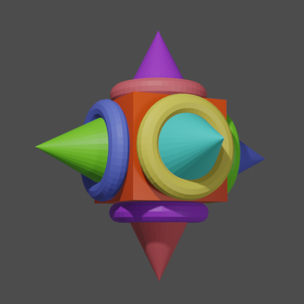
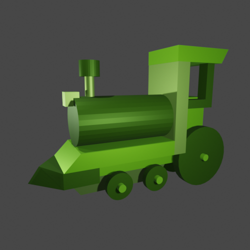
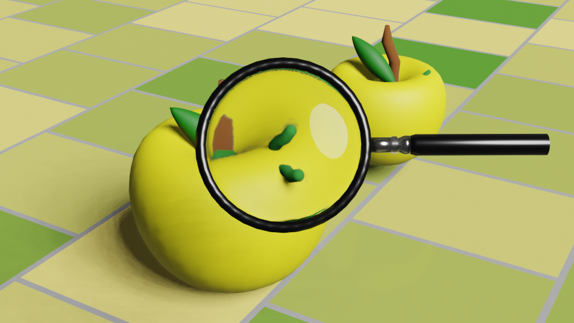
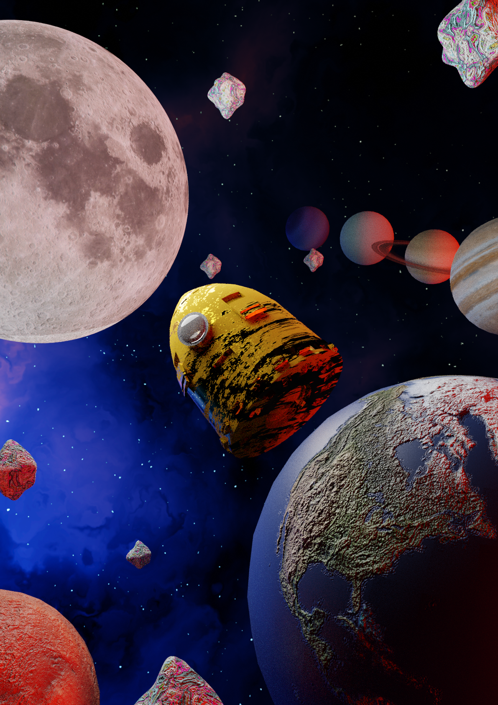

Modelado 3D
Modelado 3D ¡Mirálo ahora!
Te enseño que es lo que he realizo en las aplicaciones de modelado 3D.
Piñata
Esta piñata está realizada con formas básicas, como un taurus (donas), conos y un cuadrado, las luces y los colores son lo da la profundidad, esto muestra que podemos hacer cualquier cosa con las formas que vienen por default.
Tren
Este tren esta formado con figuras básicas como lo son los cilindors y cuadrados, aunque tiene intervención porque se deformaron las formas, aunque al principio de ve sencillo es bastante complejo.
Paisaje low polly
Este paisaje tiene el estilo low polly, con el modelado 3d se nota mucho, es complejo pero el resultado es genial.

Fruta
En el modelado se pueden dar efectos reales de algún objeto como por ejemplo una lupa, ¿puedes ver como tiene aumento? La lupa tiene metal y vidrio, el 3d nos da una ayuda para recrear las texturas.
Sistema solar
Este sistema solar es un trabajo que nos deja ver que podemos hacer lo que queramos, desde poner una textura en los planetas, como en un cohete, sin duda es una gran herramienta.
